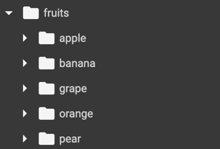
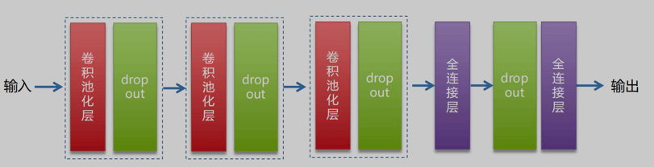
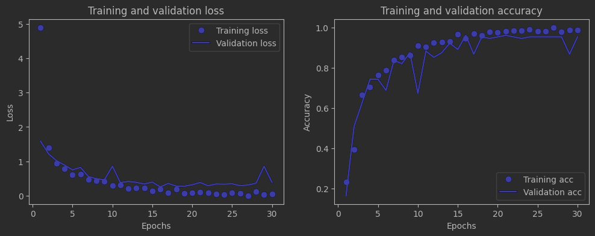
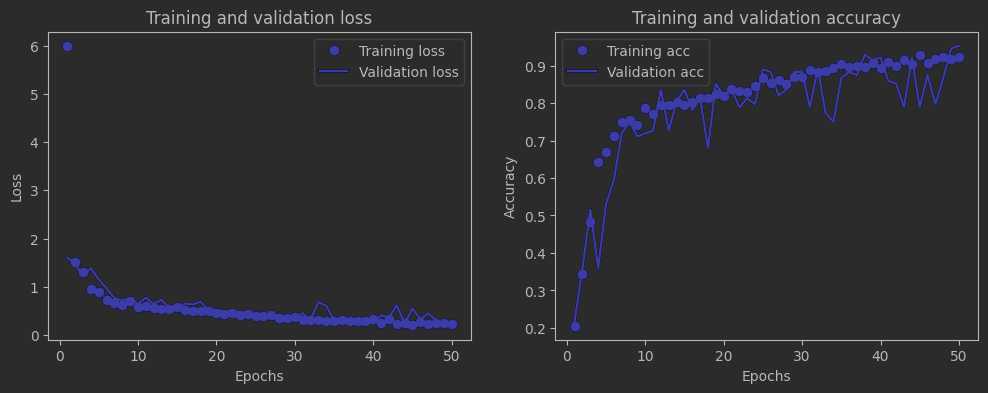
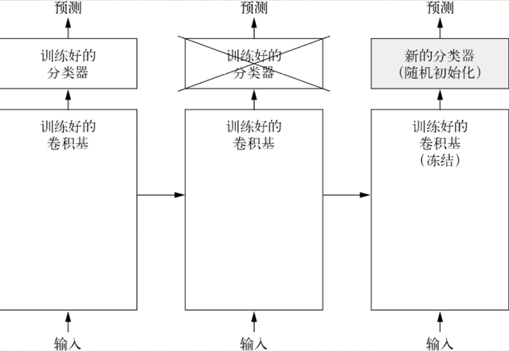
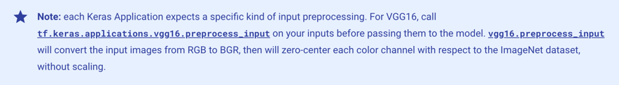
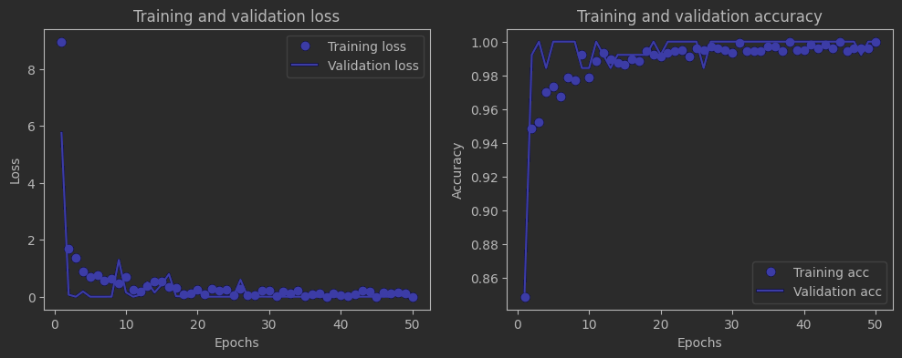

记录一次较为满意的实验。调优过程参考了Chollet大神的《Python深度学习》第8章中部分内容
一、任务描述
任务：水果图片分类，是一个典型的图像多分类任务
实验环境：colab (tensorflow 2.15.0)
数据集：爬虫从百度图片搜索结果爬取的，包含1036张水果图片，共5个类别（苹果288张、香蕉275张、葡萄216张、橙子276张、梨251张），分类较为均衡
数据文件夹结构，如下图：

二、实验过程
1.数据准备
（1）将图片转为dataset
使用keras的image_dataset_from_directory接口，可以自动将fruits下的每个子文件夹当作一个class（分类），从而生成dataset(生成的label是文件夹名)
1 | from tensorflow.keras.utils import image_dataset_from_directory |
上述代码对dataset做了如下操作：
- validation_split=0.2：划分为训练集（80%）、验证集（20%），
- image_size=(180, 180)：统一图片尺寸为180x180，减小后续训练时的计算量和内存占用
- label_mode=’categorical’：label使用何种编码方式。此处为one-hot编码，对应后面使用的损失函数为categorical_crossentropy；如果label_mode设为’int’，则损失函数需要使用sparse_categorical_crossentropy
（2）划分测试集
训练集用于模型训练中的参数调整，验证集用于模型超参数确定，测试集则用于最后的模型评估，虽然这里使用的数据集不大，但我还是划分了一个测试集出来
1 | # 计算validation_ds的大小 |
2.模型构建与训练
（1）构建

网络结构如上图，包含3个卷积池化组（用于图像特征提取、降维），并添加了Dropout层（正则化，防止过拟合，因为模型层数多，但相对的数据集并不大），然后是2个全连接层（对特征进行抽象整合，最后输出），构建代码如下：
1 | from keras import layers |
上述代码在开头还添加了一个Rescaling层，用于归一化（将数据映射到0～1之间，加速模型收敛，提高精度）
（2）编译
1 | model.compile(loss="categorical_crossentropy", |
- loss=”categorical_crossentropy”: 分类交叉熵损失函数
- optimizer=”rmsprop”：优化器使用rmsprop（均方根前向梯度下降），一种梯度下降算法的改进版本，可动态调整学习率，提高训练效率
- metrics=[“accuracy”]：使用精度（这里是CategoricalAccuracy）作为评估指标
（3）训练
1 | history = model.fit( |
跑30轮，输出结果如下：
1 | Epoch 1/30 |
3.评估与预测
（1）绘制loss和accuracy曲线
1 | import matplotlib.pyplot as plt |

如上图，loss和accuracy都不错，也没有太大的过拟合，说明Dropout还是很有效的
执行一下评估：
1 | test_loss, test_acc = model.evaluate(test_ds) |
结果：0.925
1 | 5/5 [==============================] - 1s 104ms/step - loss: 0.3252 - accuracy: 0.9248 |
（2）预测并获取分类报告
1 | from sklearn.metrics import classification_report |
模型使用softmax输出的是一个二维的概率值（5个分类各自可能的概率大小），而classification_report需要传入一维的真实label和预测值，所以这里使用np.argmax将每个样本中概率最大的值，转为对应的整数索引
1 | print(y_true) |
最后看下分类报告的结果
1 | # 生成分类报告 |
1 | precision recall f1-score support |
从support一栏可以看到每个类别实际参与测试的样本数，总体还算均衡；accuracy是0.92，不错的成绩，但还有优化空间
三、模型调优
1.数据增强（data augmentation）
图片的数据增强，指的是通过对原始图像进行变换、扩充等操作，增加训练数据的多样性，从而提高模型的泛化能力。对于数据集较小的情况，使用数据增强是一种很有效的解决方法
（1）添加数据增强层
1 | data_augmentation = keras.Sequential( |
- RandomFlip(“horizontal”):将水平翻转应用于随机抽取的50% 的图像
- RandomRotation(0.1):将输入图像在[-10%,+10%]的范围随机旋转(这个范围是相对于整个圆的比例，用角度表示的话，范围是[-36，+36°])
- RandomZoom(0.2):放大或缩小图像，缩放比例在[-20%，+20%]范围内随机取值
（2）重新构建模型
1 | from keras import layers |
（3）使用callback函数
keras的callback函数可以在训练过程的不同阶段执行特定的操作。它可以在训练的开始或结束、每个批次之前或之后等时刻执行诸如：中断训练、保存模型、加载一组不同的权重或改变模型的状态等
1 | callbacks = [ |
这里设置为在训练过程中，监测val_loss，当其有更优值时，才覆盖保存之前的模型
（4）训练与评估
1 | history = model.fit( |
训练50轮（让其自动保存最优模型），结果如下：
1 | Epoch 1/50 |
loss和accuracy曲线如下：

依旧没有明显的过拟合，然后30轮和50轮的精度差别其实并不大
也来评估一下：
1 | test_model = keras.models.load_model("fruits_with_aug.keras") |
结果：0.947，有小幅提升！
1 | 5/5 [==============================] - 0s 21ms/step - loss: 0.1702 - accuracy: 0.9474 |
然后是分类报告（代码没变，我就不贴了）：
1 | precision recall f1-score support |
accuracy 0.95,f1分数也基本都达到了0.95，说明数据增强还是有效果的
2.使用预训练模型
好了，该上“牛刀”了——使用预训练模型。意思是在我们训练时，使用已经在其他数据集上训练好的模型作为起点，“站在巨人的肩膀上”
这里预训练模型选择了vgg16，它在ImageNet（该数据集包含超过1400万张属于1000个类别的图像）图像分类竞赛中取得了第二名，参数量大约为1.3亿
（1）原理

上图摘自《Python深度学习》，原理就是使用vgg16作为训练好的卷积基，然后将其冻结，防止在训练过程中，内部参数被改变；在其上添加我们自己的全连接层，作为新的分类器，然后开始训练
（2）获取卷积基
1 | conv_base = keras.applications.vgg16.VGG16( |
keras中自带了一些常用模型，其中就包括vgg16。include_top指是否需要包括vgg16的全连接层，由于它的全连接层有1000个类别的输出，而我们这里只有5个类别，所以并不需要
（3）执行冻结
1 | conv_base.trainable = False |
（4）模型构建
1 | from keras import layers |
使用vgg16对输入数据格式有要求，可以调用keras.applications.vgg16.preprocess_input来处理，tf官方也给出了说明（如下图）

（5）训练与评估
1 | history = model.fit( |
依旧是跑50轮，自动保存最佳模型，结果如下：
1 | Epoch 1/50 |
loss和accuracy曲线：

绝了，一个顶天一个立地（哈哈～），希望有生之年还能见到这样美妙的情景
最后，加载一下最佳模型，执行预测：
1 | test_model = keras.models.load_model("fruits_vgg16_with_aug.h5") |
结果：1.00
1 | 5/5 [==============================] - 2s 430ms/step - loss: 2.4407e-05 - accuracy: 1.0000 |
分类报告如下：
1 | precision recall f1-score support |
这就是使用预训练模型的效果，杀鸡用牛刀，满分！
四、实验中遇到的问题
1.报错：Input 0 of layer “model” is incompatible with the layer: expected shape=(None, 180, 180, 3), found shape=(256, 256, 3)
原因：输入模型的图片数据shape与定义的shape不符
解决：在使用image_dataset_from_directory转换dataset时，是可以直接定义image_size的，这样很方便
2.刚开始使用vgg16时，发现训练中loss不下降
原因：《Python深度学习》这本书中，关于训练中常见的一些问题，都提供了很详实的原因和解决方案。对于这种情况，通常是训练的配置有问题
解决：查了下vgg16的preprocess_input方法，文档中对输入要求为：A floating point numpy.array or a tf.Tensor, 3D or 4D with 3 color channels, with values in the range [0, 255]，所以Rescaling层并不需要，需要注释掉
1 | inputs = keras.Input(shape=(180, 180, 3)) |
3.colab跑epoch时很慢
原因：一开始以为是显卡不给力，还额外买了点算力，但问题依旧，后来想到可能是因为数据集放在了google drive上的原因，因为dataset是generator，是惰性读取，并不会一次性将数据读入内存，训练时还是会和磁盘有交互
解决：将数据集搬到实验环境的本地磁盘上
五、总结
整个实验是一个标准的图像多分类问题，在深度学习中是比较基础、入门的内容。实验先是构建了一个初始的模型，然后针对数据集较小的问题，使用数据增强来提升数据多样性，从而优化了模型精度。在此基础上，又尝试了vgg16，见证了预训练模型的强大之处。
其实，《Python深度学习》中还介绍了对预训练模型的fine tune，但是考虑到data augmentation + vgg16的accuracy已经到1.0了，就没有再尝试。
多实践多总结，相信“日拱一卒，功不唐捐”